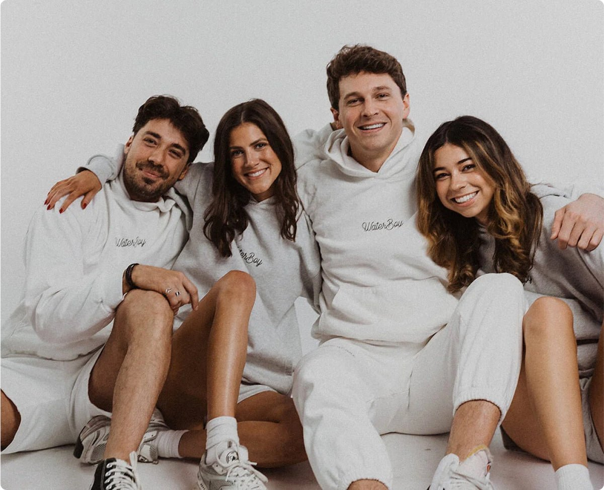

She Sells Wine for a Living and Has Tried Every Hangover "Cure." The One She Packed for 3 Days of New York Wine Tastings Had Her Saying "I Was Able to Rally SO Fast."
Tori is a wholesale wine and spirits portfolio manager. She took Weekend Recovery on a 3-day wine tasting trip to New York. Here's what she wrote when she got home.

If anybody has earned the right to roll their eyes at hangover products, it's the people who sell the drinks.
Tori S. is one of them. She works in the wine and spirits business as a wholesale portfolio manager. That's her job title, in her own review.
So when she says she has tried every fix out there, she means it. In her words:
"So trust me, I have tried all the "cures"....I am also not in my early twenties anymore, let's just say that."
Then came a 3-day wine tasting trip to New York. Three days of tastings means three mornings after.
Think about what day two of a trip like that usually feels like. You wake up in a hotel room with a headache, a dry mouth and a full schedule. The first tasting is at 11. The last thing you want to see is another glass. Day three is worse.
Here's how Tori described her mornings instead:
Never once did I feel like death walking in the morning, I was able to rally SO fast, which is a miracle 100/100!!!! I'll never live without these.
What she packed was Waterboy Weekend Recovery. And yes, she added a line at the end of her review: "*Disclaimer I do not support 3 day wine benders and exsessive drinking". We love her for it.
Why someone who has tried everything picked this one
You're probably thinking what anyone in her job would think: it's another salty drink with "hangover" on the label. Here's the difference she found. Everything she had already tried covers one thing. Plain water has no sodium at all. A leading sports drink has about one ninth of the electrolytes in one Weekend Recovery stick. Coffee gets you moving and does nothing for your stomach. So on the second morning of a trip, you end up stacking three or four of them and hoping one works.
Waterboy's founders, Mike and Connor, used to do all of it at once. Their old morning-after routine, in their words: "we'd chug down a Pedialyte to replace electrolytes + raw ginger for nausea + emergen C + l-theanine to reduce hangxiety etc." Then they admitted the obvious: "the last thing you want to do when you are hungover is run your own science lab and 5 step recipe."
So they put the whole kit in one stick. Here's what's in Weekend Recovery, and what Waterboy says each part is there for:
| In the stick | Why it's there |
|---|---|
| 3,205mg electrolytes, including 1,120mg sodium | To replace what a night out takes. About 9x the electrolytes of a leading sports drink. |
| Ginger root extract | To aid with digestion. Waterboy's word for it: give nausea a gag order. |
| L-theanine, an amino acid found in tea | To calm your nerves and restlessness. Or, as the brand puts it: humiliate hangxiety. |
| Vitamin C and B12, 500% of daily value each | To smack fatigue, caffeine free. |
| 0g sugar, no caffeine | So you can have one at 1 a.m. and still sleep. |

She isn't the only one who stress-tested it
Twelve weddings in one year. That's Lauren's calendar. She and her girlfriend went to all of them:
we will NEVER travel again without this Weekend Recovery Formula... traveling home on Sundays wasn't nearly as bad with this in our system. Simply having this with us was like having a security blanket!
Six days of camping at a music festival. Corrin took it to Welcome to Rockville:
every morning at the festival I would make one and chug it first thing in the morning lol. Absolute game changer.
Reviews from verified buyers on waterboy.com, some shortened. Individual results vary.
How the regulars use it
Arlene, another verified buyer, has it down to two sticks: "I drink one before bed after night of partying and one as a soon as I wake up, usually the one before bed is enough to do the trick." That's the move. One before you sleep. One when the alarm goes off.
Two tips from people who drink it a lot. It's salty, on purpose: that's the sodium. And as Corrin put it, "your water needs to be ice cold or made in a cup with lots of ice."
What it costs, and what it doesn't do
About $2 a stick. $1.67 if you subscribe. Less than the tip on one glass of wine.
It won't make you 22 again, and it doesn't make drinking safer. Waterboy's own line on its landing page says it straight: "Not a miracle cure, but a better way to recover after a night out for $2/serving."

Weekend Recovery, 12 sticks
- 12 sticks: enough for a 3-day trip for two
- 3,205mg electrolytes, ginger, L-theanine, B12 and C
- 0g sugar, no caffeine
- Skip, modify or cancel by text
- Two pouches ship free (orders of $35.99 or more)
Questions
When do I take it?
One before bed after a night out, one when you wake up. Mix into 16 to 32 oz of cold water.
Does it have caffeine or sugar?
No caffeine. 0g sugar. Sweetened with a little organic stevia.
Why is it salty?
1,120mg of sodium per stick. That's the point. Ice-cold water helps.
Is that much sodium OK for me?
If you watch your sodium, are pregnant or have a health condition, check with your doctor first.